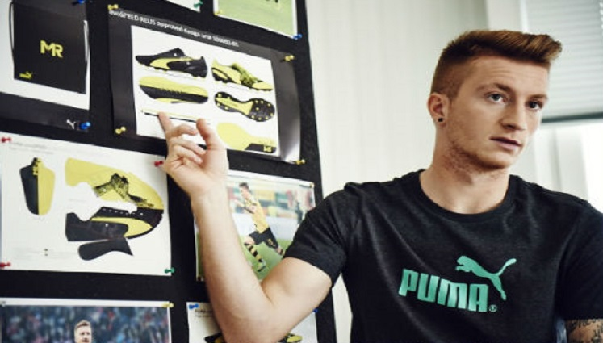
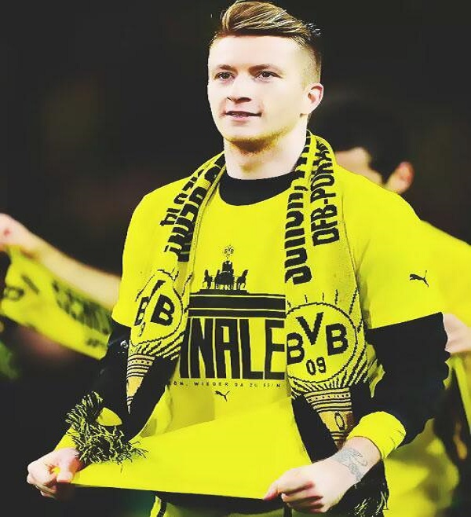
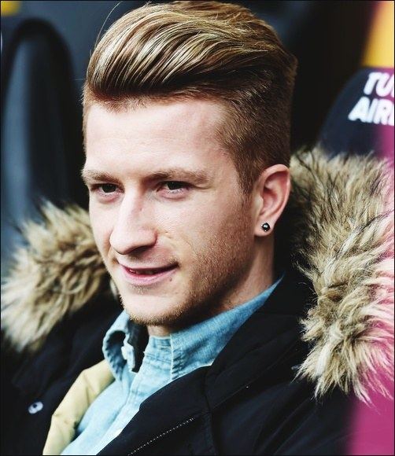
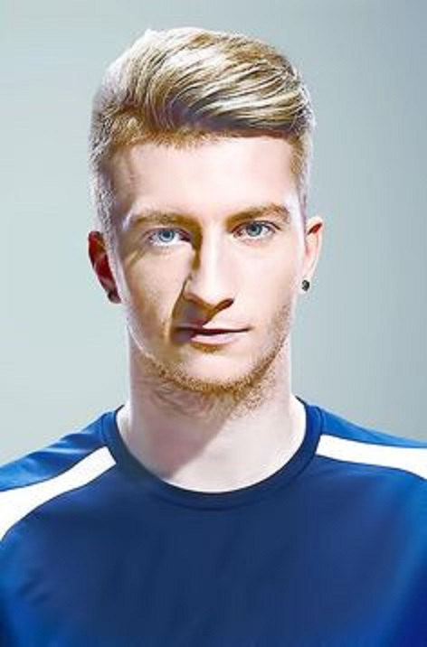
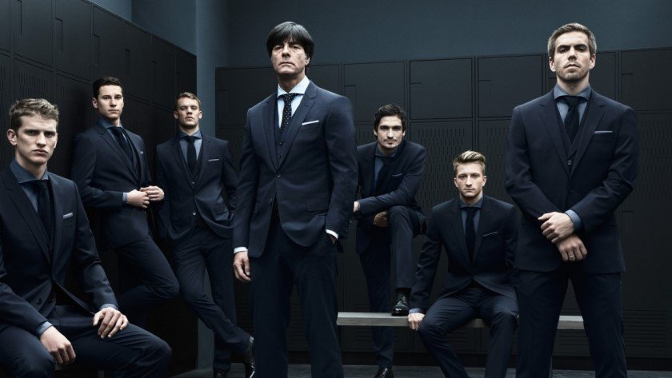

데 실리오 파헤치기
두번째 선수는 유벤투스의 핵심 수비수 "
마테아 데 실리오
"입니다.
데 실리오는 이탈리아 국적의 92년생으로 올해 26세입니다.
현재 이탈리아리그 세리에A 슈퍼스타 호날두와 함께 유벤투스에서 활약하고있으며 포지션은 수비수입니다.
수비수임에도 축구팬들뿐만 아니라 많은 축구 구단들한테도 인기가 많은데요
그 이유는 공격과 수비가 동시에 되는 멀티 플레이 선수이기 때문입니다!
데 실리오는 뛰어난 실력으로 이탈리아 명문 구단인 AC 밀란에서 10대에 프로 무대에 데뷔를 하게 됩니다.
데 실리오의 미친 외모와 실력 때문에 데뷔 때부터 국가대표 대선배이자 전 주장인 말디니가 "실력과 외모 모두 주장에 걸맞다" 라고 하는 등 큰 주목을 받게 됩니다.
하지만 데 실리오는 한 인터뷰에서 기자의 질문에 "축구는 얼굴로 하는게 아닌 발로 하는 거다" 라고 하여 겸손함과 프로 정신을 보여줘 더욱 인기를 얻었습니다.
이뿐만 아니라 로이스는 자신이 직접 디자인한 축구화를 발매하여 얻은 모든 수익을 암환자들을 돕는데 기부하는 등 계속 선행들을 꾸준히 해오고 있습니다.
인성 또한 갖추고 있기 때문에 전 세계적으로 인기 있는 선수가 된게 아닐까요🙂

자선 축구화 디자인하는 로이스
마르코 로이스 얼굴 파헤치기
지금부터는 마르코 로이스의 멋진 모습을 파헤쳐 보겠습니다!

리그 우승 후 세레모니
독일 국가대표 인터뷰

사복 패션

로이스 증명사진

독일 국가대표 단체 화보

유명 잡지 표지 모델 화보
지금까지 개간로 "마르코 로이스" 였습니다
Photographs By. 구글 이미지 검색